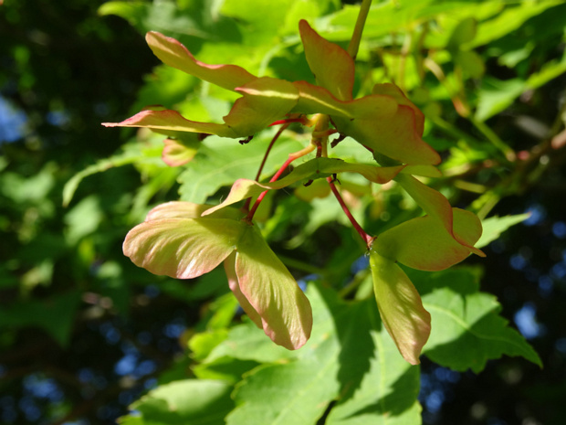

Димокарпус лонган, Лонган - Dimocarpus longan
2 images

Додонея клейкая - Dodonaea viscosa
9 images

Клён американский, ясенелистный - Acer negundo
29 images

Клён белый, ложноплатановый, псевдоплатановый, Явор - Acer pseudoplatanus
32 images

Клён бородатый - Acer barbinerve
4 images

Клён веерный - Acer palmatum
27 images

Клён дланевидный разнов. дваждырассечённый - Acer palmatum var. dissectum
8 images

Клён завитой - Acer circinatum
6 images

Клён колосистый - Acer spicatum
5 images

Клён ложнозибольдов - Acer pseudosieboldianum
34 images

Клён маньчжурский - Acer mandshuricum
8 images

Клён остролистный - Acer platanoides
87 images

Клён пенсильванский - Acer pensylvanicum
11 images

Клён полевой - Acer campestre
8 images

Клён татарский - Acer tataricum
14 images

Клён трёхлопастный - Acer monspessulanum
6 images

Клён четырёхмерный - Acer argutum
7 images

Клён японский - Acer japonicum
9 images

Клен зеленокорый - Acer tegmentosum
5 images

Клен красный - Acer rubrum
5 images



Сапиндовые - Sapindaceae